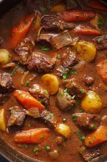

Julius's Fav Dish

Description
This is double bacon and beef stew, my oldest son's favourite meal I've made ever. (so far)
It warms the heart and soothes the soul because I use a gravy base and cook it with love.
Perfect "under a blanky with a movie type dish!
Ingredients
- Beef Cubes
- Beef Broth
- Smokey Bacon
- Thick Cut Peppered Bacon
- Carrots
- Green Onion
- Garlic
- Gravy
- Seasonings
- Spices
Steps
- Press the garlic and green onion into the pan and brown them
- Add beef chunks and stir occasionally adding spices and seasoning till the ancestors tell you to stop
- Fry the two different types of bacon in a seperate pan while cuttin carrots up to boil
- Add gravy and beef broth to the pan with the garlic and cubes to start the heating
- Drain and rinse the carrots, add them to the gravy mix
- Break up the crispy bacon and crumble it into the stew
- Let stew for another 15 minutes and serve with some grated cheese or cripsy onions
- Pairs well with a light citrusy white wine and hugs.